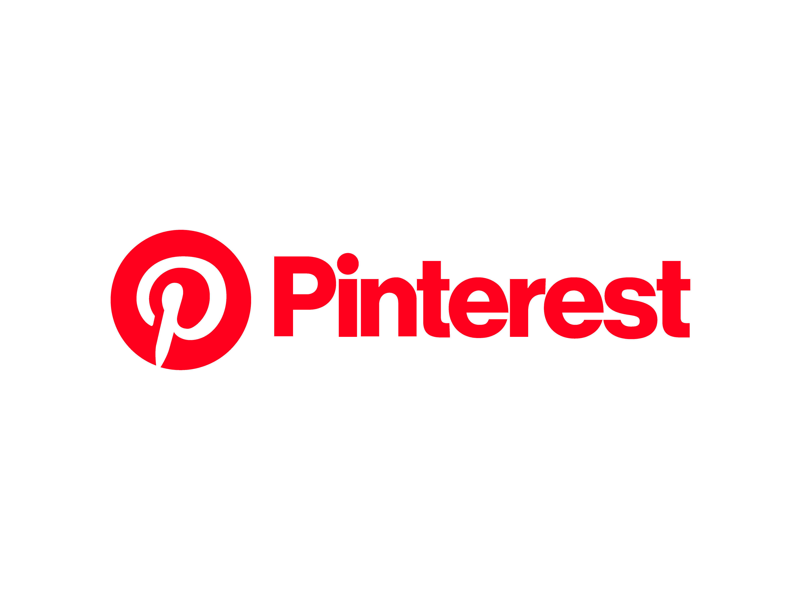

Pinterest와 함께 원하는 삶
을 그려보세요
계속하면 Pinterest의 서비스 약관에 동의하고 개인정보 보호 정책을
읽었음을 인정한 것으로 간주합니다. 자세히 알기
LIVE PREVIEW · 선택한 테마가 아래 화면에 적용됩니다.

계속하면 Pinterest의 서비스 약관에 동의하고 개인정보 보호 정책을
읽었음을 인정한 것으로 간주합니다. 자세히 알기